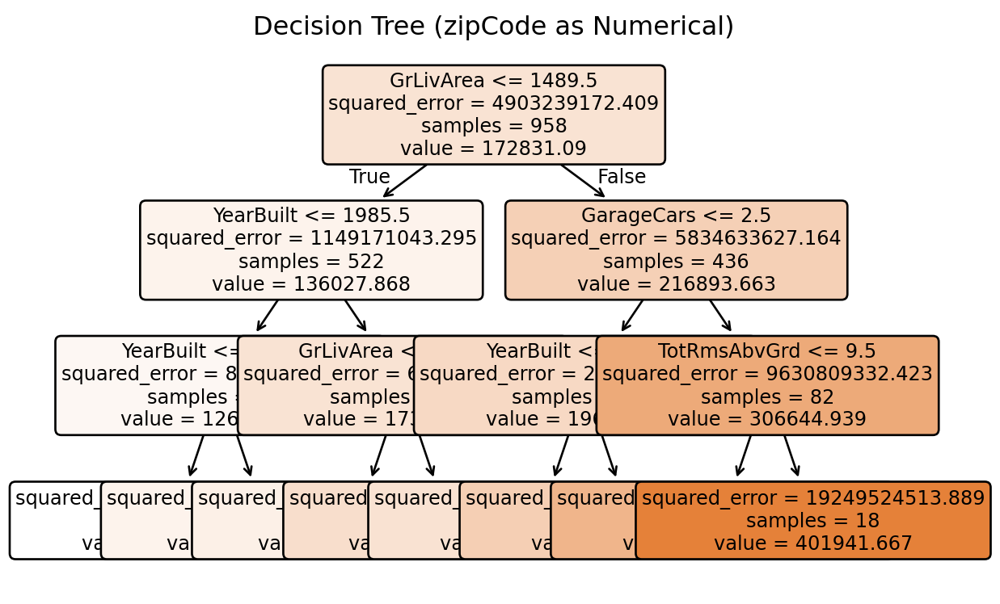
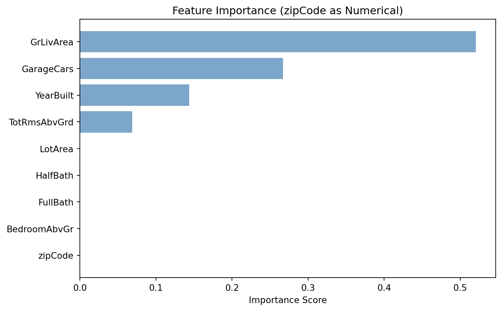
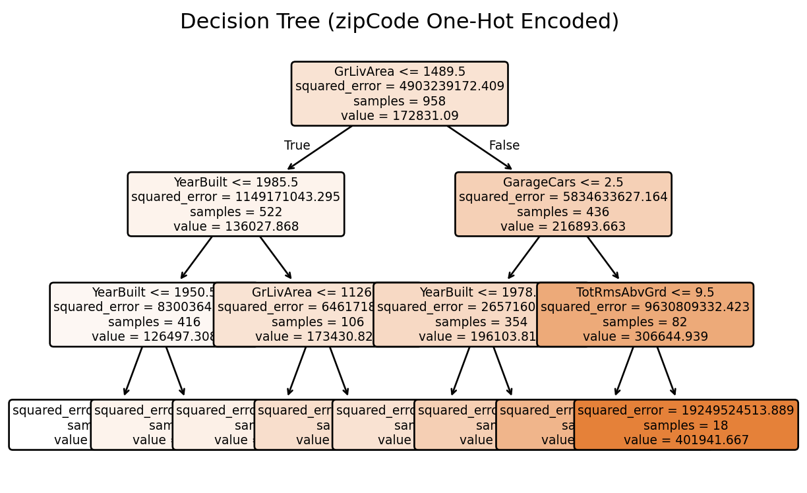
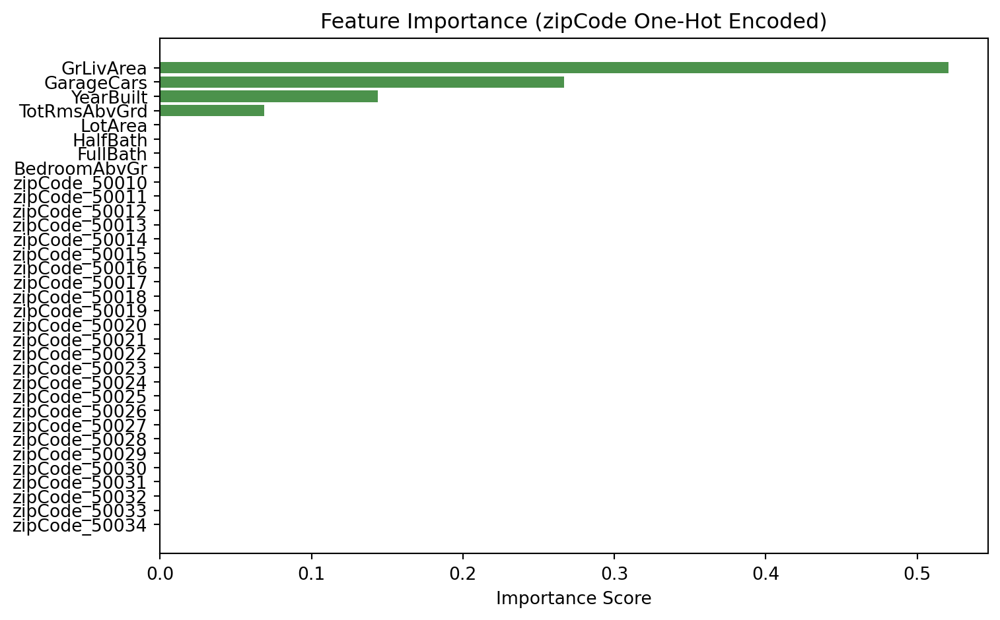

Model built with 8 terminal nodesDecision Tree Challenge
Feature Importance and Categorical Variable Encoding
🌳 Decision Tree Challenge - Feature Importance and Variable Encoding
Challenge Overview
Your Mission: Create a simple GitHub Pages site that demonstrates how decision trees measure feature importance and analyzes the critical differences between categorical and numerical variable encoding. You’ll answer two key discussion questions by adding narrative to a pre-built analysis and posting those answers to your GitHub Pages site as a rendered HTML document.
The Decision Tree Problem 🎯
“The most important thing in communication is hearing what isn’t said.” - Peter Drucker
The Core Problem: Decision trees are often praised for their interpretability and ability to handle both numerical and categorical variables. But what happens when we encode categorical variables as numbers? How does this affect our understanding of feature importance?
What is Feature Importance? In decision trees, feature importance measures how much each variable contributes to reducing impurity (or improving prediction accuracy) across all splits in the tree. It’s a key metric for understanding which variables matter most for your predictions.
Important🎯 The Key Insight: Encoding Matters for Interpretability
The problem: When we encode categorical variables as numerical values (like 1, 2, 3, 4…), decision trees treat them as if they have a meaningful numerical order. This can completely distort our analysis.
The Real-World Context: In real estate, we know that neighborhood quality, house style, and other categorical factors are crucial for predicting home prices. But if we encode these as numbers, we might get misleading insights about which features actually matter most.
The Devastating Reality: Even sophisticated machine learning models can give us completely wrong insights about feature importance if we don’t properly encode our variables. A categorical variable that should be among the most important might appear irrelevant, while a numerical variable might appear artificially important.
Let’s assume we want to predict house prices and understand which features matter most. The key question is: How does encoding categorical variables as numbers affect our understanding of feature importance?
The Ames Housing Dataset 🏠
We are analyzing the Ames Housing dataset which contains detailed information about residential properties sold in Ames, Iowa from 2006 to 2010. This dataset is perfect for our analysis because it contains a categorical variable (like zip code) and numerical variables (like square footage, year built, number of bedrooms).
The Problem: ZipCode as Numerical vs Categorical
Key Question: What happens when we treat zipCode as a numerical variable in a decision tree? How does this affect feature importance interpretation?
The Issue: Zip codes (50010, 50011, 50012, 50013) are categorical variables representing discrete geographic areas, i.e. neighborhoods. When treated as numerical, the tree might split on “zipCode > 50012.5” - which has no meaningful interpretation for house prices. Zip codes are non-ordinal categorical variables meaning they have no inherent order that aids house price prediction (i.e. zip code 99999 is not the priceiest zip code).
Data Loading and Model Building
Python
Tree Visualization
Python

Feature Importance Analysis
Python

Critical Analysis: The Encoding Problem
Warning⚠️ The Problem Revealed
What to note: Our decision tree treated zipCode as a numerical variable. This leads to zip code being unimportant. Not surprisingly, because there is no reason to believe allowing splits like “zipCode < 50012.5” should be beneficial for house price prediction. This false coding of a variable creates several problems:
- Potentially Meaningless Splits: A zip code of 50013 is not “greater than” 50012 in any meaningful way for house prices
- False Importance: The algorithm assigns importance to zipCode based on numerical splits rather than categorical distinctions OR the importance of zip code is completely missed as numerical ordering has no inherent relationship to house prices.
- Misleading Interpretations: We might conclude zipCode is not important when our intuition tells us it should be important (listen to your intuition).
The Real Issue: Zip codes are categorical variables representing discrete geographic areas. The numerical values have no inherent order or magnitude relationship to house prices. These must be modelled as categorical variables.
Proper Categorical Encoding: The Solution
Now let’s repeat the analysis with zipCode properly encoded as categorical variables to see the difference.
Python Approach: One-hot encode zipCode (create dummy variables for each zip code)
Categorical Encoding Analysis
Python
Tree Visualization: Categorical zipCode
Python

Feature Importance: Categorical zipCode
Python

Challenge Requirements 📋
Minimum Requirements for Any Points on Challenge
Create a GitHub Pages Site: Use the starter repository (see Repository Setup section below) to begin with a working template. The repository includes all the analysis code and visualizations above.
Add Discussion Narrative: Add your answers to the two discussion questions below in the Discussion Questions section of the rendered HTML.
GitHub Repository: Use your forked repository (from the starter repository) named “decTreeChallenge” in your GitHub account.
GitHub Pages Setup: The repository should be made the source of your github pages:
- Go to your repository settings (click the “Settings” tab in your GitHub repository)
- Scroll down to the “Pages” section in the left sidebar
- Under “Source”, select “Deploy from a branch”
- Choose “main” branch and “/ (root)” folder
- Click “Save”
- Your site will be available at:
https://[your-username].github.io/decTreeChallenge/ - Note: It may take a few minutes for the site to become available after enabling Pages
Getting Started: Repository Setup 🚀
Getting Started Tips
Discussion Questions and Analysis 📊
Question 1: Numerical vs Categorical Encoding of Zip Codes
Zip codes must be modeled as categorical variables. Despite appearing as numbers (50010, 50011, 50012, 50013), these values represent discrete geographic areas with no meaningful numerical relationships for predicting house prices.
The problem with numerical encoding: When treated as numbers, decision trees create splits like “zipCode < 50012.5.” This implies zip codes 50010 and 50011 are similar and distinct from 50012 and 50013. In reality, zip code 50010 might be an affluent suburb while 50011 is industrial—numerical proximity means nothing for housing values.
Ordinal classification: Zip codes are non-ordinal categorical variables. Ordinal variables have meaningful order (education levels: high school < bachelor’s < PhD). Zip codes lack this property—50013 being numerically larger than 50010 doesn’t correlate with higher or lower home prices. Each zip code simply identifies a different neighborhood.
Real-world impact: Our numerical encoding model ranks zip code near the bottom in feature importance, suggesting location barely matters for house prices. Any real estate professional knows this is wrong—location often dominates pricing. By encoding zip codes numerically, we’ve blinded our model to one of the strongest predictors. Proper categorical encoding (one-hot encoding) allows splits like “Is this house in zip code 50010?” capturing the true nature of geographic distinctions.
Question 2: R vs Python Implementation Differences
The core issue: Python’s scikit-learn and R’s rpart handle categorical variables fundamentally differently, with major consequences for feature importance interpretation.
Python’s limitation: The scikit-learn documentation explicitly states:
“Some advantages of decision trees are: … Able to handle both numerical and categorical data. However, scikit-learn implementation does not support categorical variables for now.”
Scikit-learn only supports binary splits. When we one-hot encode our 4 zip codes, we create 4 separate binary features. Each split tests one condition at a time (“Is this zipCode_50010?”). The documentation acknowledges this creates problems:
“Some features (e.g., categorical features with one-hot encoding) can be artificially split into many features which might not be necessary for the prediction task.”
R’s advantage: R’s rpart package handles categorical variables natively. The rpart documentation explains:
“For a categorical predictor with m levels, the split is of the form ‘x ∈ S’ where S is a subset of the m possible values. For regression trees, rpart can consider up to 2^(m-1) - 1 possible splits.”
For our 4 zip codes, rpart can evaluate splits like {50010, 50013} vs {50011, 50012} in a single split, grouping zip codes by their actual relationship to house prices. If zip codes 50010 and 50013 have similar prices, rpart discovers this directly.
Feature importance impact: - Python: Zip code importance fragments across 4 separate features (zipCode_50010, zipCode_50011, etc.), each competing individually against continuous variables - R: Zip code appears as a single feature with consolidated importance, accurately reflecting location’s total contribution to predictions
Verdict: R’s rpart is superior for categorical variables because it preserves them as single, interpretable concepts rather than fragmenting them into artificial binary features. This produces both more accurate feature importance rankings and more compact, interpretable trees.
Question 3: State of the Art for Categorical Variables in Python
While scikit-learn has limitations, modern Python libraries have solved the categorical variable problem:
CatBoost - Built specifically for categorical data. From the CatBoost documentation:
“CatBoost uses a combination of one-hot encoding and an advanced mean encoding for categorical features. Unlike other libraries, CatBoost can work with categorical features without any preprocessing. It implements an efficient way to encode categorical features during training that avoids target leakage and overfitting.”
CatBoost automatically handles categorical variables without preprocessing—ideal for high-cardinality variables like zip codes.
LightGBM - Microsoft’s solution with native categorical support. From the LightGBM documentation:
“LightGBM can use categorical features directly (without one-hot encoding). The experiment on Expo data shows about 8x speed-up compared with one-hot encoding… LightGBM uses Fisher’s method to find the best split point for categorical features.”
Both faster and more effective than one-hot encoding.
Practical recommendation: For production work with categorical variables, use CatBoost or LightGBM instead of scikit-learn’s base decision trees. Both libraries rival or exceed R’s categorical handling while maintaining Python’s ecosystem advantages. The category_encoders library also provides sophisticated encoding methods for sklearn compatibility, including target encoding that preserves more information than one-hot encoding.